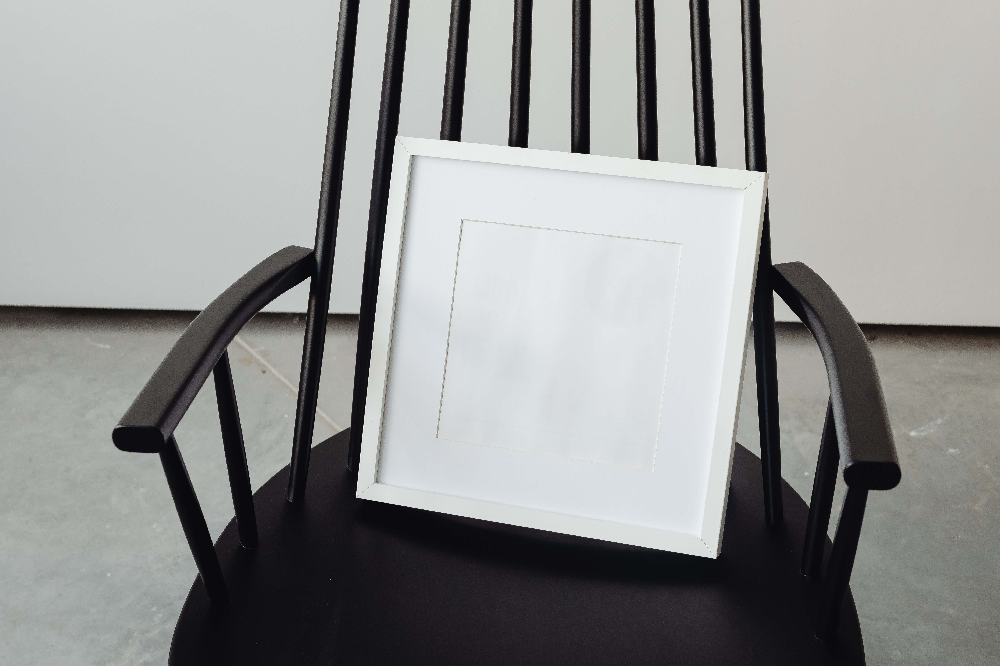
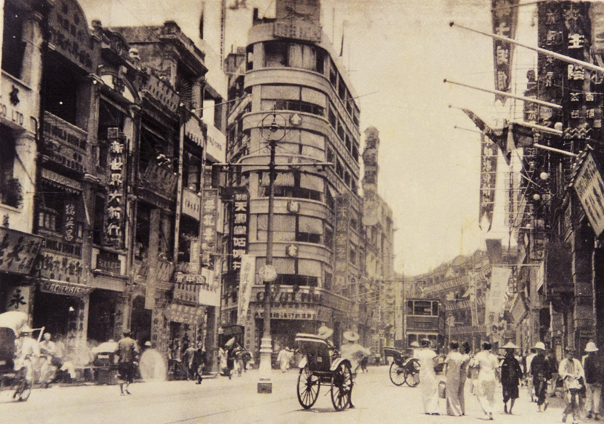
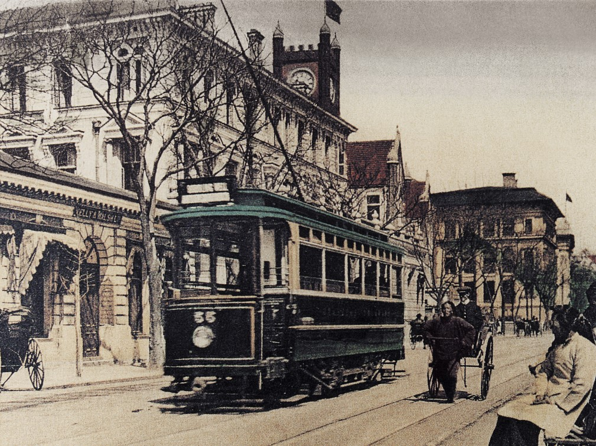

在岁月的长河里，我们每一个人的年轮都这样静静地流淌，消逝。看似日复一日没有变化， 然而当你亲历了一个生命从你的生命里消失，你就会渐渐的开始思考，生命是什么？尤其是一个你 至亲至爱的人离开了你。或许，你会伤心难过，或许你会学着长大，学着去珍惜，珍惜每一个眼前的人 ，哪怕是一个陌生人。随着时间的流逝，岁月教会我们最多的，或许就是珍惜。
走到生命的哪一个阶段，都该喜欢那一段时光，完成那一阶段该完成的职责，顺生而行， 不沉迷过去，不狂热地期待着未来，生命这样就好。不管正经历着怎样的挣扎与挑战， 或许我们都只有一个选择：虽然痛苦，却依然要快乐，并相信未来。

今天的我永远都比明天的我年轻，昨天的我永远都比前天的我大胆热情，过去的每一天， 我都用过我的真心、我的热情、我的胆量去对待我想认真对待的人。过去的每一天都不可惜， 可是可惜的是，或许明天的我不会再像今天和昨天一样了。
呐，你是否曾经站在你以前与伙伴一起玩的地方，站在那，任清风吹拂， 面前浮现着童年的场景，淡淡的笑，想要去触摸，可又无力。如果可以， 你回到过去，在你曾经最厌恶的教室，看着曾经的老师的在讲台上讲课， 你是否又会流泪。那熟悉的下课铃的下课铃，令人怀念的课桌，桌上散乱的 笔、书，曾经的同学，如你脑海里的一样，互相打闹，追逐，开玩笑，你又 会怎样?
不过可惜，没有如果。曾经的天真不会回来，当年的书早已丢失，那课桌也许还在， 却不知道哪张是你的，学校还在，却已没有那一个个熟悉的身影，曾经不会变成现在，逝去的不会回来...... 呵，也许吧。 毕业之前拍着照片，那照片上一个个笑脸，也许照片早已泛黄，也许一直藏在你房 间的最深处，你不敢拿起，怕会哭，可这样又有什么用呢?那笑容早已印在你脑海 里最深处，你只是不敢回忆罢了。那学校里的大树下，是否有你们曾经的脚印， 曾经许下的诺言...... 有吗?怎么不记得了? 呵，也许有吧。
你怀念过去吗?幼稚的言语，歪歪扭扭的字体，作业本上的红叉，你怀念吗?曾经 小拇指的勾勾，“拉钩上吊一百年不许骗，骗人是小猪”你有过吗?你还记得吗?也 许记得，也许忘了吧。也许你有一个最好的朋友，也许以前是无话不谈的好朋 友，以前的以后，就互相看不顺眼，互相躲着对方，可，这是为什么? 你的过去幸福吗?快乐吗?你怀念吗?很多记忆值得怀念，很多记忆都很快乐， 可为什么，我们要把它锁起来?剩下些不好的，拿来回忆呢。也许你没有，也许 你一直都很幸福，但这又怎么可能呢?有痛苦，有悲伤，有喜怒，有哀乐，有快 乐，有欢笑，有平坦，有曲折，这，才能称之为人生。
我们时常会怀念过去，因为单纯，因为快乐。即使泪流满面，嘴角也依旧掀起...... 你说，对不对?
